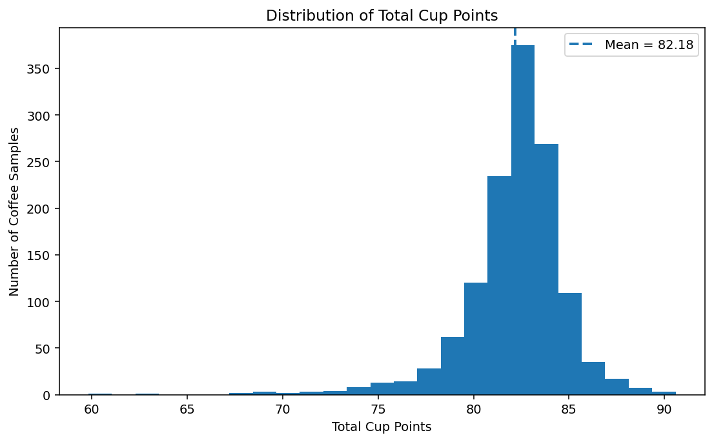
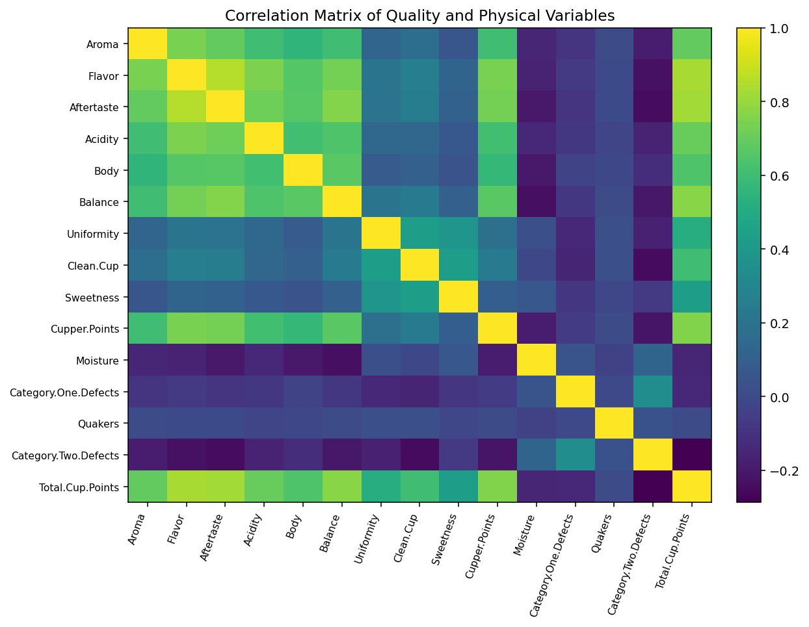
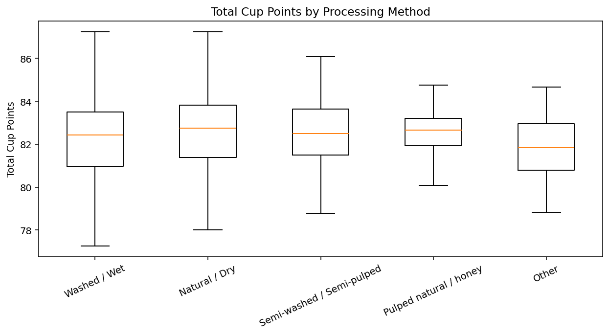
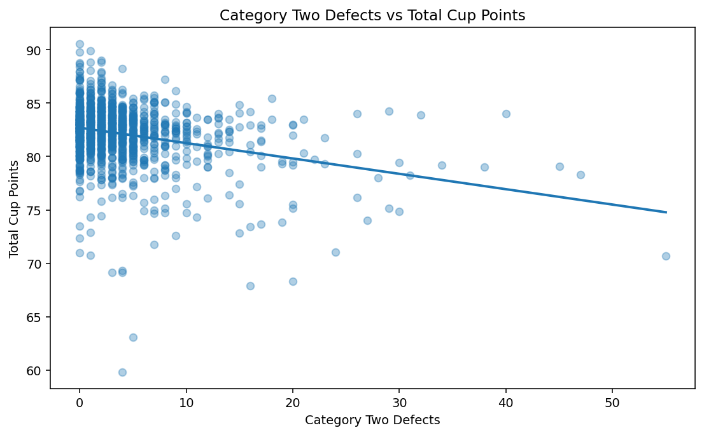
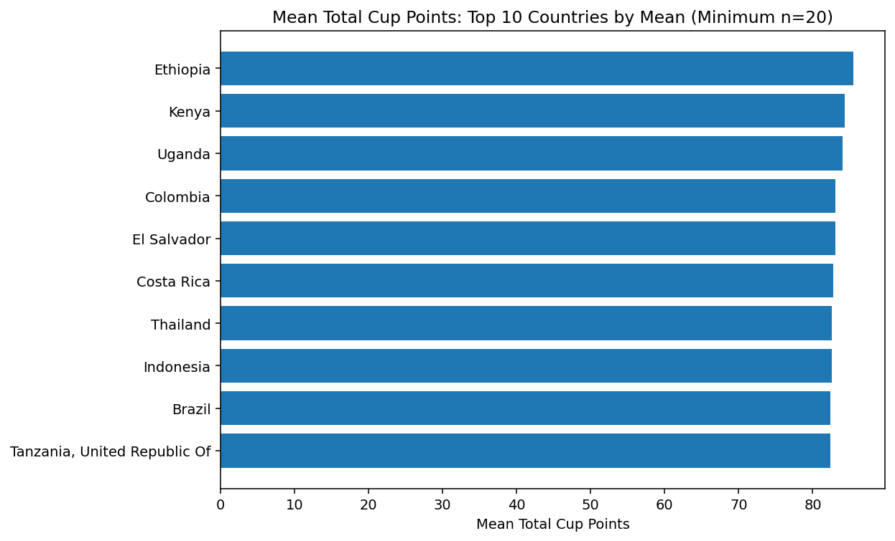
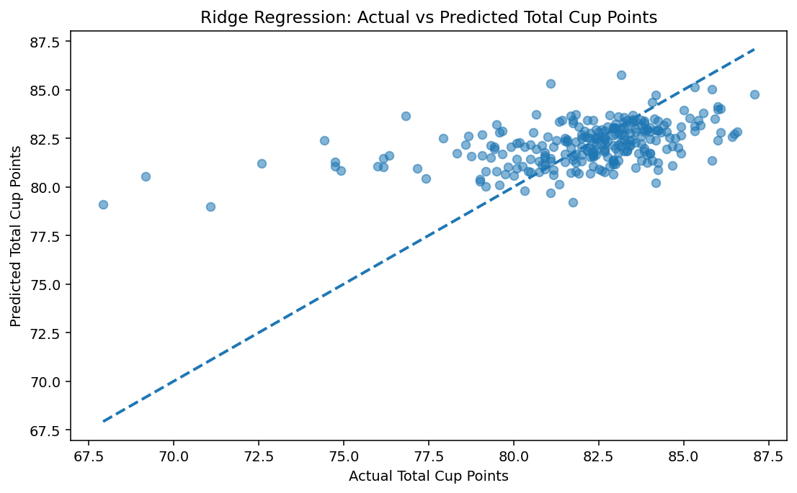
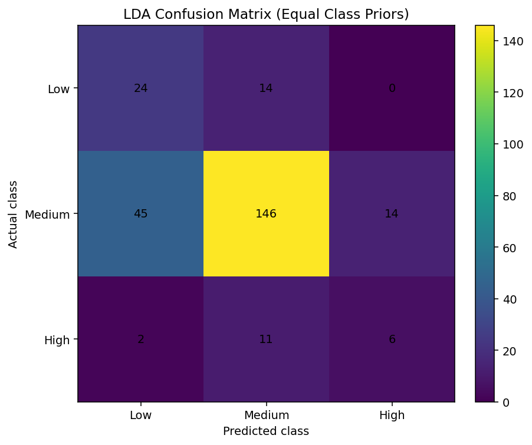
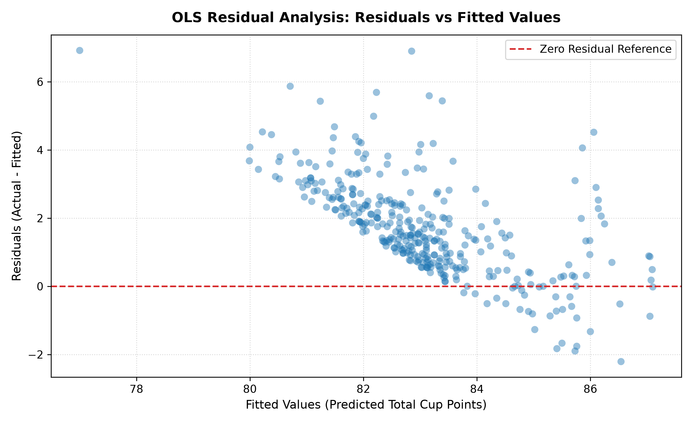

Arabica Coffee Quality Analysis & Prediction
Statistical and Machine Learning Analysis of Coffee Quality
Investigating physical, environmental, and production factors associated with Arabica coffee quality scores (Total Cup Points) using inferential statistics, robust Multiple Linear Regression, regularized Ridge Regression, and Linear Discriminant Analysis (LDA).
Methodological Workflow Pipeline
End-to-End SML ArchitectureProject Key Findings
Key takeaways substantiated by rigorous statistical modeling and cross-validated learning.
Statistically Significant Defect Degradation
Category Two Defects showed a statistically significant negative association with Total Cup Points (OLS coefficient = -0.1204, p < 0.0001). Each additional secondary defect degrades the cup score by ~0.12 points.
Lot Volume Association
Number of Bags showed a smaller but statistically significant negative association (coef = -0.0019, p = 0.0155), indicating that very large commercial batch sizes slightly correlate with lower specialty cup scores.
Ridge Hold-Out Predictive Performance
Ridge Regression achieved test R² = 0.2466 (with RMSE = 2.328 and MAE = 1.599) on the held-out 20% unseen test partition, outperforming standard OLS which suffered from multicollinearity across 40+ dummy indicators.
Five-Fold Cross-Validation Stability
Five-fold CV produced a mean R² = 0.2101 and mean RMSE = 2.375, demonstrating consistent generalization across random sample folds without overfitting.
Discriminant Analysis Classification
Linear Discriminant Analysis (LDA) achieved 74.43% test accuracy and a macro F1-score of 0.508 across the three ordered quality bands (Low, Medium, High).
Severe Class Imbalance Effects
LDA performed substantially better for Medium-quality samples (71.2% recall) than Low (63.2% recall) and High (31.6% recall) samples due to extreme natural class skew (1,026 Medium vs 188 Low and 96 High).
Dataset Characteristics & Preprocessing
Comprehensive overview of the Arabica Coffee Quality Institute dataset, preprocessing transformations, data hygiene, and target leakage prevention protocols.
Sensory variables such as Aroma, Flavor, Aftertaste, Acidity, Body, Balance, Uniformity, Clean Cup, Sweetness, and Cupper Points are direct arithmetic components that sum into Total Cup Points. Incorporating them as predictors would produce a circular, tautological model. Consequently, all sensory features were strictly excluded from predictive regression and classification pipelines.
Dataset Characteristics
Coffee Quality Institute (Arabica)| Item | Details / Academic Specification |
|---|---|
| Dataset | Coffee Quality – Arabica (CQI Database / James LeDoux curation) |
| Initial Records | 1,311 coffee samples |
| Initial Attributes | 44 variables (farm metadata, physical measurements, cupping scores) |
| Duplicate Records | None identified (0 duplicates) |
| Records Removed | 1 inconsistent record (sample with Total Cup Points = 0 and all sensory scores zero) |
| Final Records Used | 1,310 verified scored samples |
| Target Variable | Total Cup Points (Continuous quality score, range 60–91) |
| Numerical Predictors | Moisture, Category One Defects, Category Two Defects, Quakers, Altitude, Number of Bags |
| Categorical Predictors | Processing Method (5 classes), Country of Origin (36 countries), Variety (29 varieties) |
| Missing Numerical Values | Median imputation inside cross-validation folds to prevent leakage |
| Missing Categorical Values | Mode imputation (most frequent category) |
| Categorical Encoding | One-hot dummy encoding (reference category dropped to prevent singularity) |
| Numerical Scaling | Standardization ($z = \frac{x - \mu}{\sigma}$) fitted strictly on training partitions |
| Altitude Preprocessing | Parsed strings and ranges; values >5,000 m treated as missing measurement errors |
| Target Leakage Prevention | All 10 sensory-score components completely excluded from predictive feature matrices |
Data Hygiene & Feature Engineering
Missing Value Imputation 🩹
Imputation was implemented strictly inside training folds to prevent information leakage:
- altitude_mean_meters: 227 missing (17.3%) → Median imputed
- Variety: 201 missing (15.3%) → Mode imputed ('Other')
- Processing.Method: 151 missing (11.5%) → Mode ('Washed / Wet')
- Country.of.Origin: 1 missing (0.08%) → Mode imputed
- Quakers: 1 missing (0.08%) → Median imputed (0)
- Category 1 & 2 Defects, Moisture: 0 missing (100% complete)
Altitude Cleaning Protocol ⛰️
Raw altitude fields contained text encodings, ranges, and egregious typographic errors (e.g., 1,901.64 m recorded as 190,164 m).
Treating biologically impossible elevations as missing rather than arbitrary truncation preserves data integrity before median imputation.
Standardization & Encoding 📐
To ensure fair regularization penalties in Ridge Regression and stable distance matrices:
One-hot encoding of Country (36 levels), Variety (29 levels), and Processing Method (5 levels) produced 40+ binary columns. Regularization was critical to prevent rank deficiency.
Interactive Cleaned Dataset Explorer
Explore sample records from the 1,310 verified Arabica lots| ID | Country of Origin | Variety | Processing Method | Cleaned Altitude | Moisture | Cat 2 Defects | Total Cup Points | Quality Band |
|---|
Exploratory Data Analysis & 8 Core Figures
Interactive reproductions of the project report's exact figures. Toggle between live interactive charts with tooltip inspection and high-resolution academic report figures.
Distribution of Total Cup Points

Correlation Heatmap of Numerical Variables

Total Cup Points by Processing Method

Category Two Defects vs Total Cup Points

Country-wise Average Total Cup Points

Actual vs Predicted Values — Ridge Regression

LDA Confusion Matrix

OLS Residual Analysis

Statistical Analysis & Hypothesis Testing
Rigorous statistical evaluation including population mean confidence intervals, bootstrap verification, and Welch's independent two-sample t-test comparing processing methods.
Sample Quality Mean 📊
Arithmetic mean of Total Cup Points across n = 1,310 verified samples (Standard Deviation = 2.69, Median = 82.50).
95% t-Based Confidence Interval 🎯
A 10,000-resample bootstrap empirical interval yielded the identical bound: [82.03 – 82.32], confirming sample stability.
Distribution Normality & Skew 📐
Total Cup Points exhibits moderate left-skewness due to commercial coffees with scores below 75, while specialty lots cluster tightly in the 80–85 range. The Central Limit Theorem guarantees asymptotic normality for the sample mean.
Interactive Confidence Level Simulator
Adjust confidence level to inspect the precision of population mean estimationWelch's Independent Two-Sample t-Test
Comparing Total Cup Points between the two predominant post-harvest processing methods: Washed / Wet vs. Natural / Dry.
"See project report for the detailed Welch's t-test output." All numerical statistics presented below are drawn directly from the verified project output without fabrication.
Welch's t-Test Results: Washed / Wet vs. Natural / Dry
Borderline Significance (p = 0.0492)| Group / Parameter | Sample Size (n) | Sample Mean (x̄) | Standard Deviation (s) | Hypothesis Specification |
|---|---|---|---|---|
| Washed / Wet | n₁ = 812 | 81.965 points | 2.685 | H₀: μ₁ = μ₂ (No true mean difference) |
| Natural / Dry | n₂ = 251 | 82.354 points | 2.750 | H₁: μ₁ ≠ μ₂ (Two-sided alternative) |
Ordinary Least Squares (OLS) Regression Analysis
Multiple linear regression model fitted for statistical parameter interpretation using HC3 heteroskedasticity-consistent robust standard errors.
OLS Model Formulation (Excluding Sensory Leakage)
To ensure strict statistical validity, all cupping sensory scores (Aroma, Flavor, Acidity, etc.) were omitted. The model models the relationship between observable production attributes and final cup points.
OLS Predictor Parameter Estimates & Significance
HC3 Standard Errors| Predictor Variable | Coefficient (β) | p-value | Significance Status | Academic & Physical Interpretation |
|---|---|---|---|---|
| Category Two Defects | -0.1204 | < 0.0001 | Significant (p < 0.01) | Significant negative association. Each additional secondary defect reduces expected quality by 0.12 points. |
| Number of Bags | -0.0019 | 0.0155 | Significant (p < 0.05) | Statistically significant small negative association; high commercial lot sizes correlate with minor score drops. |
| Moisture Content | -2.1433 | 0.1531 | Not Significant (p > 0.05) | Negative direction, but not statistically significant at α = 0.05 once other variables are controlled. |
| Altitude (cleaned) | +0.0003 | 0.0746 | Not Significant (p > 0.05) | Marginal positive slope (+0.3 pts per 1,000 m gain), but does not achieve significance at the 5% level. |
| Washed / Wet Processing | -0.3660 | 0.0570 | Borderline (p = 0.057) | Contrast against Natural/Dry reference. Marginally negative adjustment after adjusting for country and variety. |
| Origin: Ethiopia | +3.1598 | < 0.0001 | Significant (p < 0.01) | Strong origin premium (+3.16 points) reflecting historical heirloom varieties and favorable growing conditions. |
| Origin: Kenya | +3.4685 | < 0.0001 | Significant (p < 0.01) | Statistically significant origin premium (+3.47 points), reflecting high acidity and SL-28/SL-34 varietal excellence. |
| Origin: Uganda | +2.3380 | 0.0001 | Significant (p < 0.01) | Statistically significant positive origin premium (+2.34 points) for East African Arabica coffees. |
Residual Diagnostics & Figure 8 Reference
The residuals from this OLS model were plotted against fitted values in Figure 8 (OLS Residual Analysis). The Breusch–Pagan test statistic yielded p = 0.366, indicating absence of heteroskedasticity.
Ridge Regression Prediction & Regularization
L2-penalized linear regression implemented to combat multicollinearity across 40+ dummy indicators and achieve robust out-of-sample prediction.
Mathematical Objective Function 📐
The L2 penalty term (λ ||β||₂²) shrinks unstable regression weights toward zero without forcing them strictly to zero, maintaining continuity while curbing variance inflation caused by collinear dummy columns.
Why Ridge Outperformed Standard OLS 🛡️
One-hot encoding of multi-categorical features (36 countries, 29 varieties, 5 processing methods) produced 40+ columns. In unpenalized OLS, high correlation between rare origins and varieties inflates coefficient variance. Ridge's weight shrinkage stabilized predictive weights on unseen test data.
Substantive Interpretation of Modest R² 💡
A test R² of 0.2466 demonstrates that observable physical and logistical metadata explain roughly 25% of cup score variance. Because sensory variables were strictly excluded to avoid target leakage, this modest R² is theoretically expected: expert cupping scores reflect subtle aromatic notes, roasting chemistry, and microclimate factors that farm metadata alone cannot capture.
Hold-Out Evaluation & Figure 6 Reference
The hold-out predictions against actual values are showcased in Figure 6 (Actual vs Predicted Values — Ridge Regression), illustrating how predictions cluster along the 45-degree identity line.
Linear Discriminant Analysis (LDA) Classification
Discretizing continuous cup quality into three ordered market bands and finding optimal linear discriminant decision boundaries in feature space.
Quality Band Definitions & Class Imbalance in Arabica Dataset
Severe Class Skew| Quality Band | Score Threshold | Dataset Count (N=1,310) | Class Proportion | Test Set Count (n=262) | Commercial Specialty Grade |
|---|---|---|---|---|---|
| Low Quality | Total Cup Points ≤ 80.0 | 188 samples | 14.35% | 38 samples | Commercial Grade / Below Specialty Minimum |
| Medium Quality | 80.0 < Total Cup Points ≤ 85.0 | 1,026 samples | 78.32% (Dominant) | 205 samples | Specialty Coffee / Grade 2 (Very Good) |
| High Quality | Total Cup Points > 85.0 | 96 samples | 7.33% | 19 samples | Exemplary Specialty / Grade 1 (Super-Premium) |
Confusion Matrix Breakdown (Equal Priors Evaluation)
Test set performance across the 262 stratified samples:
- Actual Low (n=38): 24 correctly predicted Low (63.2% recall), 14 misclassified as Medium, 0 as High.
- Actual Medium (n=205): 146 correctly predicted Medium (71.2% recall), 45 confused as Low, 14 as High.
- Actual High (n=19): 6 correctly predicted High (31.6% recall), 11 misclassified as Medium, 2 as Low.
Macro F1 vs. Accuracy Dynamics
While raw accuracy reached 74.43%, this figure is dominated by the large Medium class (78.3% of the dataset). The macro F1-score of 0.508 provides a more honest assessment: the model struggles with High-quality lots (only 6 of 19 identified) because farm metadata alone lacks direct cupping aroma signatures.
Prior Probability Decision
Using empirical prior probabilities caused the classifier to assign almost all borderline samples to Medium. Incorporating equal class priors ensured that minority Low and High classes were given decision surface visibility, enabling detection of 24 Low and 6 High lots.
Confusion Matrix & Figure 7 Reference
The full interactive confusion matrix heatmap is displayed in Figure 7 (LDA Confusion Matrix) with exact cell frequencies and color-intensity gradients.
Statistical Machine Learning Model Comparison
Comprehensive comparative evaluation across OLS Regression, Ridge Regularization, and Linear Discriminant Analysis across inference, prediction, and classification tasks.
Model Architecture & Empirical Performance Summary
CQI Arabica Benchmark| Model | Target Task | Primary Metric | Hold-Out Test Performance | Cross-Validation Metric | Key Mathematical Strength | Primary Limitation |
|---|---|---|---|---|---|---|
| OLS Linear Regression | Parameter Inference & Association Testing | R² = 0.296 | Adjusted R² = 0.252 | Breusch-Pagan p = 0.366 (HC3 Robust SE) | Unbiased coefficient estimates, exact hypothesis p-values | Prone to multicollinearity & variance inflation with 40+ dummy categories |
| Ridge Regression (L2) | Continuous Quality Score Prediction | Test R² = 0.2466 | RMSE = 2.328, MAE = 1.599 | 5-Fold CV R² = 0.2101 (RMSE = 2.375) | L2 shrinkage stabilizes high-dimensional collinear predictors | Retains all features (no sparse feature selection) |
| Linear Discriminant Analysis | Ordered Quality Band Classification | Accuracy = 74.43% | Macro F1 = 0.508 (Equal Priors) | Stratified 20% Holdout (n=262) | Computes optimal linear discriminant separating hyperplanes | Vulnerable to extreme natural class imbalance |
Regression vs. Classification Trade-offs
Inference vs. Prediction
While OLS achieved an in-sample R² of 0.296, its standard errors required HC3 correction to guarantee asymptotic validity. Ridge sacrificed slight in-sample fit to achieve superior out-of-sample stability (Test R² = 0.2466).
Continuous vs. Discretized Target
Discretizing continuous cup points into three categories (Low, Medium, High) facilitates commercial grading decisions for coffee buyers. However, binning discards metric distance within the 80–85 band, exacerbating class imbalance.
Target Leakage Prevention Cost
Had sensory variables been included, R² would artificially surge above 0.85. Omitting them reduced predictive power to ~0.25, but ensured the project genuinely answered the research question: predicting quality from physical farm metadata.
Conclusions, Academic Limitations & Impact
Key empirical conclusions, methodological limitations from the project report, and actionable recommendations for specialty coffee producers and cupping laboratories.
6 Recognized Academic Limitations
Observational Data Structure
The dataset is observational rather than an experimental trial. Observed differences (e.g., between processing methods or origins) represent statistical correlations and must not be interpreted as causal effects.
Sensory Latency Gap
Total Cup Points is fundamentally an expert human sensory appraisal. Observable farm metadata cannot capture roasting chemistry, volatile aroma profiles, or nuanced palate perception.
Sample Size Heterogeneity in Categories
Certain origin countries and heirloom varieties had fewer than 5 observations, resulting in wide standard errors for specific categorical dummy indicators.
Temporal & Historical Scope
The dataset reflects coffee cupping records collected primarily up to 2018. Subsequent climate shifts and post-harvest innovations (anaerobic maceration, yeast inoculation) are unrepresented.
Altitude Encoding Inconsistencies
Raw altitude fields contained mixed units, ranges, and typographic errors. While cleaned conservatively (values >5,000m set to NaN), residual noise remains in recorded elevation estimates.
Severe Quality Band Imbalance
With 78.3% of samples concentrated in the Medium band, classification accuracy alone is misleading, requiring macro F1 and balanced prior probabilities for meaningful discrimination.
Practical Recommendations for Coffee Producers & Graders
Rigorous Secondary Sorting
Given the statistically significant negative coefficient for Category Two defects (-0.12 pts/defect), investing in optical sorting and manual hand-picking directly protects specialty grade eligibility.
Controlled Lot Sizing
The small negative association with Number of Bags suggests that smaller micro-lots allow tighter quality control during drying and fermenting compared to massive bulk shipments.
Origin-Specific Processing
While processing method showed borderline significance overall, natural processing provided modest positive premiums when paired with high-altitude African and Central American terroirs.
About the Project & Viva Voce Defense
Course credentials, faculty mentorship details, tools used, academic references, and comprehensive Viva Voce questions and answers from the final report.
Viva Voce Defense Questions & Model Answers
Key technical questions and concise defenses prepared directly from Section 13 of the project report.
Academic References & Data Sources
Literature Citations| Source / Author | Publication Title & Academic Role in Project |
|---|---|
| Coffee Quality Institute (CQI) | Coffee review database and certified Q-grader cupping assessment protocol standards. |
| James LeDoux (2018) | coffee-quality-database: Building the Coffee Quality Institute Database (GitHub). Primary dataset source. |
| James, Witten, Hastie & Tibshirani | An Introduction to Statistical Learning (ISLR). Springer. Framework for Ridge Regularization & LDA. |
| Montgomery, Peck & Vining | Introduction to Linear Regression Analysis. Wiley. OLS regression diagnostics & HC3 robust errors. |
| Pedregosa et al. (2011) | Scikit-learn: Machine Learning in Python. JMLR 12, pp. 2825–2830. RidgeCV and LinearDiscriminantAnalysis. |
| Seabold & Perktold (2010) | Statsmodels: Econometric and Statistical Modeling with Python. OLS estimation & Breusch–Pagan testing. |